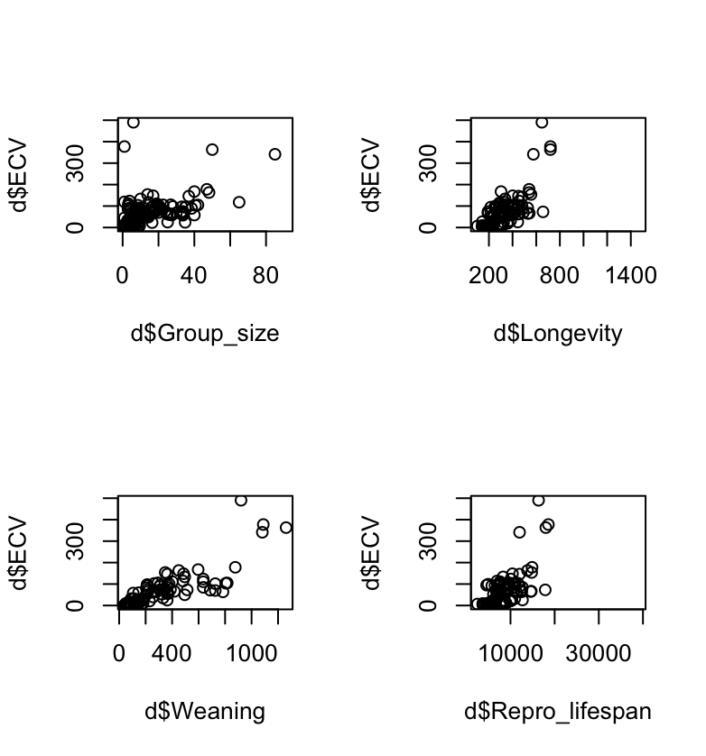
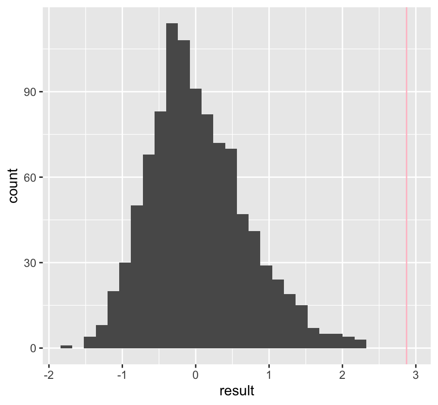

exercise08
Step One
For the first step, I loaded in the necessary packages and data before running the skim() function to get the basic information on the quantitative variables.
| Mean | SD | Min | Q1 | Median | Q3 | Max | |
|---|---|---|---|---|---|---|---|
| Social Learning | 2.3 | 16.5 | 0 | 0 | 0 | 0 | 214 |
| Research_effort | 38.8 | 16.5 | 1 | 6 | 16 | 37.8 | 755 |
| ECV | 68.5 | 82.8 | 1.63 | 11.8 | 58.6 | 86.2 | 491 |
| Group_size | 13.3 | 15.2 | 1 | 3.12 | 7.5 | 18.2 | 91.2 |
| Gestation | 165 | 38 | 60 | 138 | 166 | 183 | 275 |
| Weaning | 311 | 253 | 40 | 122 | 234 | 389 | 1261 |
| Longevity | 332 | 166 | 103 | 216 | 301 | 393 | 1470 |
| Sex_maturity | 1480 | 999 | 283 | 702 | 1427 | 1894 | 5583 |
| Body_mass | 6795 | 14230 | 31.2 | 739 | 3554 | 7465 | 130000 |
| Maternal_investment | 479 | 292 | 100 | 256 | 401 | 592 | 1492 |
| Repro_lifespan | 9065 | 4602 | 2512 | 6126 | 8326 | 10717 | 39130 |
library(tidyverse)
library(skimr)
#step one
d <- read_csv("https://raw.githubusercontent.com/difiore/ada-datasets/main/Street_et_al_2017.csv", col_names = TRUE)
skim(d)Step Two
From this dataset, I used the built in plot() function to create scatterplots of ECV as a function of Group size, Longevity, Weaning, and Reproductive lifespan. Then I used the par() function to generate all four plots into a single image

It’s a little squished :/
par(mfrow = c(2, 2))
plot (d$ECV~d$Group_size)
plot (d$ECV~d$Longevity)
plot (d$ECV~d$Weaning)
plot (d$ECV~d$Repro_lifespan)
par(mfrow = c(2, 2))Step Three
Getting the ordinary-least-squares coefficients for the slop of ECV~Group_size required me to first na.omit() the original dataset into the new NA-less dataset. From their I could produce the covariance by running the cov() function on d2$ECV and d2$Group_size. Then I could use the covariance to calculate the B1 coefficient or slope by running cor() for the variables and multiplying it by the standard deviation of the y variable divided by the standard deviation of the x variable. I proceeded to use that to calculate the B0 coefficient or intercept by taking the mean of the y variable and subtracting it by the B1 coefficient times the mean of the x variable. This produced the following results;
B One - 2.874
B Zero - 32.495
d2 <- na.omit(d)
cov <- cov(d2$ECV, d2$Group_size)
(beta1 <- cor(d2$ECV, d2$Group_size) * (sd(d2$ECV)/sd(d2$Group_size))) #beta 1 2.874
(beta0 <- mean(d2$ECV) - beta1 * mean(d2$Group_size)) #beta 0 32.495Step Four
Checking my handmade results with the lm() function, I find the same exact results, proving my calculations were accurate.
B One - 2.874
B Zero - 32.495
m1 <- lm(formula = ECV~Group_size, data = d2)
m1 #same resultsStep Five
To address this step, I first had to separate the original dataset into 3 smaller datasets for each group. I then ran na.omit()on the new datasets to prevent interference with my handmade calculations.
cat <- d |>
filter(Taxonomic_group == "Catarrhini") |>
na.omit(d)
plat <- d |>
filter(Taxonomic_group == "Platyrrhini") |>
na.omit(d)
streps <- d |>
filter(Taxonomic_group == "Strepsirhini") |>
na.omit(d)Catarrhines
B One - 1.399
B Zero - 105.411

##catarrhines
par(mfrow = c(2, 2))
plot (cat$ECV~cat$Group_size)
plot (cat$ECV~cat$Longevity)
plot (cat$ECV~cat$Weaning)
plot (cat$ECV~cat$Repro_lifespan)
par(mfrow = c(2,2))
covcat <- cov(cat$ECV, cat$Group_size)
(beta1cat <- cor(cat$ECV, cat$Group_size) * (sd(cat$ECV)/sd(cat$Group_size))) #beta 1 1.399
(beta0cat <- mean(cat$ECV) - beta1cat * mean(cat$Group_size)) #beta 0 105.411
(mcat <- lm(formula = ECV~Group_size, data = cat)) #double checking resultsPlatyrrhines
B One - 2.05
B Zero - 14.837
##platyrrhines
par(mfrow = c(2, 2))
plot (plat$ECV~plat$Group_size)
plot (plat$ECV~plat$Longevity)
plot (plat$ECV~plat$Weaning)
plot (plat$ECV~plat$Repro_lifespan)
par(mfrow = c(2,2))
covplat <- cov(plat$ECV, plat$Group_size)
(beta1plat <- cor(plat$ECV, plat$Group_size) * (sd(plat$ECV)/sd(plat$Group_size))) #beta 1 2.05
(beta0plat <- mean(plat$ECV) - beta1plat * mean(plat$Group_size)) #beta 0 14.837
(mplat <- lm(formula = ECV~Group_size, data = plat)) #double checking results - intercept is different but only due to roundingStrepsirhines
B One - 1.186
B Zero - 9.359
##strepsirhines
par(mfrow = c(2, 2))
plot (streps$ECV~streps$Group_size)
plot (streps$ECV~streps$Longevity)
plot (streps$ECV~streps$Weaning)
plot (streps$ECV~streps$Repro_lifespan)
par(mfrow = c(2,2))
covstreps <- cov(streps$ECV, streps$Group_size)
(beta1streps <- cor(streps$ECV, streps$Group_size) * (sd(streps$ECV)/sd(streps$Group_size))) #beta 1 1.186
(beta0streps <- mean(streps$ECV) - beta1streps * mean(streps$Group_size)) #beta 0 9.359
(mstreps <- lm(formula = ECV~Group_size, data = streps)) #double checking resultsComparing the slopes of each of these separate tests, I used summary.aov() to clarify the differences in significance between the coefficients. Using this method, the p-value of the platyrrhines B1 is highly significant; while strepsirhines B1 is only somewhat significant and the catarrhines B1 isn’t significant at all. This means that the ECV is strongly correlated with Group size for platyrrhines, only somewhat for strepsirhines, and very little for catarrhines.
summary.aov(mcat) #pvalue of 0.178
summary.aov(mplat) #pvalue of 0.000752
summary.aov(mstreps) #pvalue of 0.051
###looks like the relationship between ECV and Group size is strongest in platyrrhines and weakest in catarrhinesStep Six
Returning to the analysis from step 3 and 4, I had to calculate by hand the regression of sum squares, error of sum squares, and the sum of squared deviations for the x variable to get the mean variance by the regression and the mean remaining variance. From those I derived the F ratio (25.129) and the standard error of the B1 (0.573).
The critical value was derived from the qf() function (3.97) and the p-value was done with the pf() function (3.553-06). Finally, a summary() of the previous model was used to double-check my work.
SSX <- sum((m1$model$Group_size - mean(m1$model$Group_size))^2)
SSE <- sum(m1$residuals^2)
SSR <- sum((m1$fitted.values - mean(m1$model$ECV))^2)
df_error <- nrow(d2) - 1 - 1
MSE <- SSE/df_error
MSR <- SSR/1
fratio <- MSR/MSE
SEbeta1 <- sqrt(MSE/SSX) #0.573
(crit <- qf(p = 0.95, df1 = 1, df2 = 74)) #3.97023
(pvalue <- pf(q = fratio, df1 = 1, df2 = 74, lower.tail = FALSE)) #p-value 3.55e-06
summary(m1)Step Seven
To work with permutations I first loaded the :broom: and the :mosaic: packages in RStudio. Then I used a piped broom::tidy() and the filter() function to pull the slope from m1. I then set the number of permutations and ran the do() function that included creating a new version of the omitted dataset, sampling the Group_size column, producing a new model, and then repeating the process with broom::tidy() to get the new sampled slope. I then plotted the resulting distribution with the observed slope to visualize the difference. Along with a p-value comparing the actual slope to the permuted sample slopes generating a 0 p-value.

library(broom)
library(mosaic)
(obs_slope <- broom::tidy(m1) |>
filter(term == "Group_size") |>
pull(estimate))
nperm <- 1000
perm <- do(nperm) * {
d_new <- d2
d_new$Group_size <- sample(d_new$Group_size)
m <- lm(data = d_new, ECV ~ Group_size)
broom::tidy(m) |>
filter(term == "Group_size") |>
pull(estimate)
}
perm
##calculating p-value
ggplot(data = perm) +
geom_histogram(aes(x = result))+
geom_vline(xintercept = obs_slope, color = "pink")
(p <- sum(perm$result > abs(obs_slope) | perm$result < -1*abs(obs_slope))/nperm) #basically 0! means highly significant ECV trends increases as group size increases.Step Eight
Finally, I loaded in the :infer: package and then created a bootstrapped slope by specifying ECV as a function of Group_size, generate 1000 reps, and then calculating slope for each. I then specified the upper and lower bounds of the p-value and the critical value. Following this, I summarized with the summary() function to produce the mean, standard error, upper and lower bounds of the confidence interval. Using this information I could generate CIs using the percentile method and the theory method and received differing results
Percentile - upper 3.94 lower 1.22
Theory - upper 4.11and lower 1.48
Both of these are not narrow enough to suggest the slope is significant in the bootstrapped distribution
library(infer) #loading the important libraries
boot.slope <- d2 |>
specify(ECV ~ Group_size) |>
generate(reps = 1000, type = "bootstrap") |>
calculate(stat = "slope")
p_upper <- 1 - (0.05/2)
p_lower <- 0.05/2
critical_value <- qt(p_upper, df = 74)
(boot.slope.summary <- boot.slope |>
summarize(estimate = mean(stat), std.error = sd(stat), lower = estimate - std.error *
critical_value, upper = estimate + std.error * critical_value, boot.lower = quantile(stat,
p_lower), boot.upper = quantile(stat, p_upper)))
(CI.percentile <- get_ci(boot.slope, level = 1 - 0.05, type = "percentile"))##lower ci = 1.22 and upper ci = 3.94
(CI.theory <- get_ci(boot.slope, level = 1 - 0.05, type = "se", point_estimate = pull(boot.slope.summary, estimate))) ##lower ci = 1.48 and upper ci = 4.11
#boot-strapping seems to suggest a slope within confidence intervals